Bu web sitesi, Türk futbolunun uluslararası arenadaki temsilcisi Galatasaray'ın, tarih yazan zaferlerini ve yeniden canlanan Avrupa ruhunu belgelerle sunmak için hazırlanmıştır.
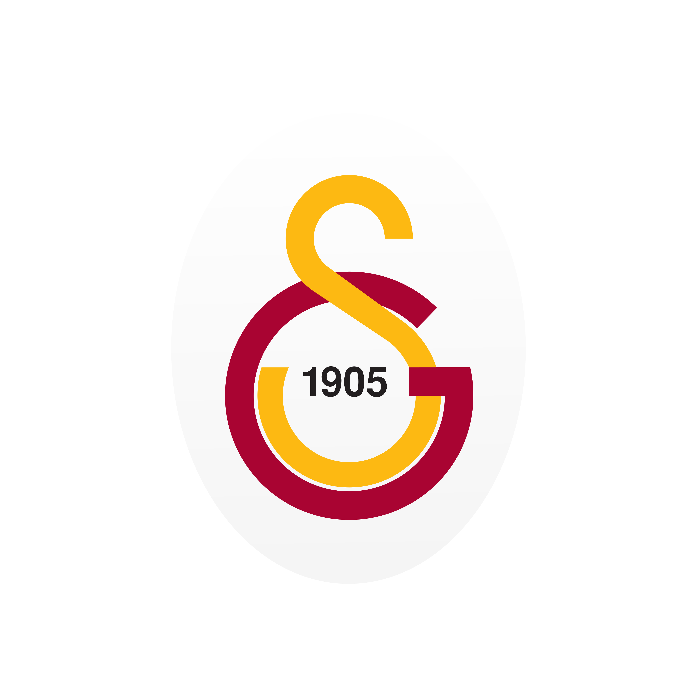
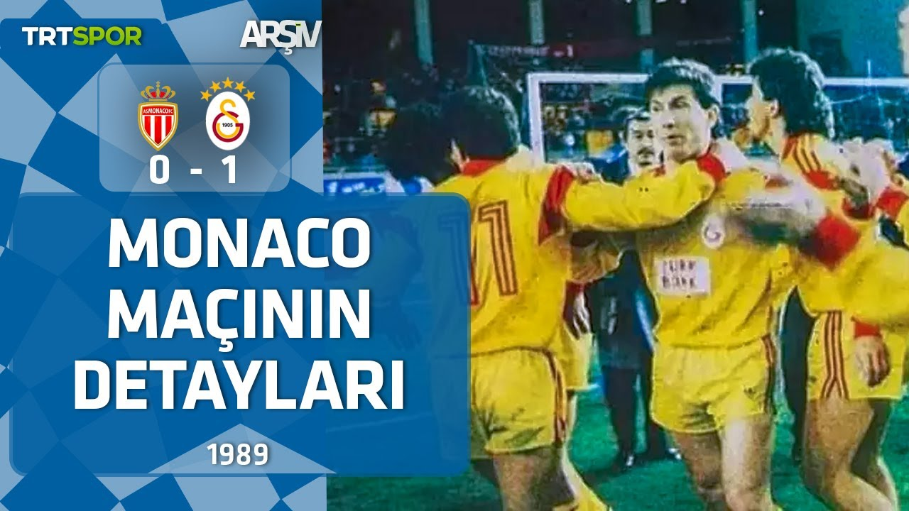
Türk futbolunun Avrupa'da "devler" arasına girdiği ilk büyük eşik olan Monaco deplasmanı, Tanju Çolak'ın o meşhur kafa golüyle kazanıldı. Bu tarihi zafer, Galatasaray'ın Şampiyon Kulüpler Kupası'nda yarı finale yükselen ilk Türk takımı olmasını sağlayarak büyük bir devrim başlattı.
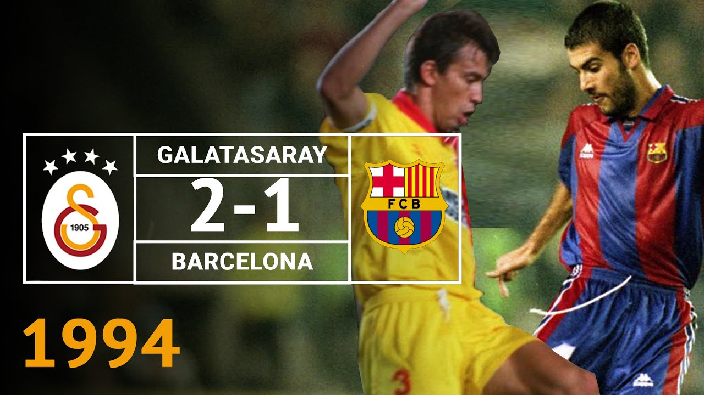
Johan Cruyff’un "Rüya Takımı" Barcelona'nın Ali Sami Yen'de dize getirildiği bu unutulmaz gece, Hakan Şükür ve Arif Erdem'in golleriyle tarihe geçti. Bu galibiyetle birlikte Galatasaray, dünyanın en büyük kulüplerine karşı her zaman kazanabileceği özgüvenini tüm dünyaya kanıtladı.
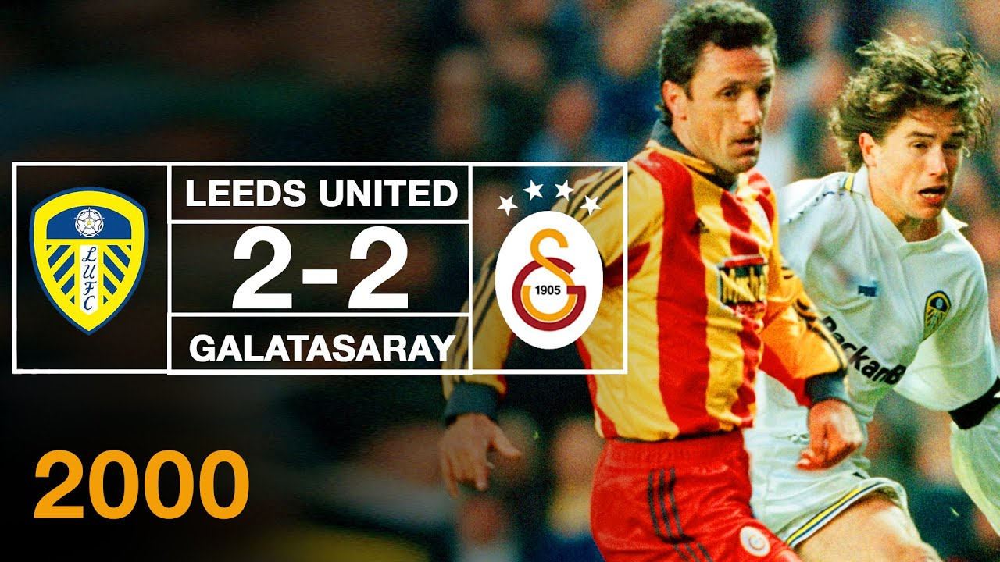
UEFA Kupası finaline giden yoldaki en zorlu ve gergin durak olan Leeds United deplasmanında, Hagi ve Hakan Şükür''ün golleriyle Kopenhag bileti alındı. Bu sonuç, Türk futbol tarihinde bir kulüp takımının ilk kez Avrupa'da finale yükselmesi anlamına geliyordu.
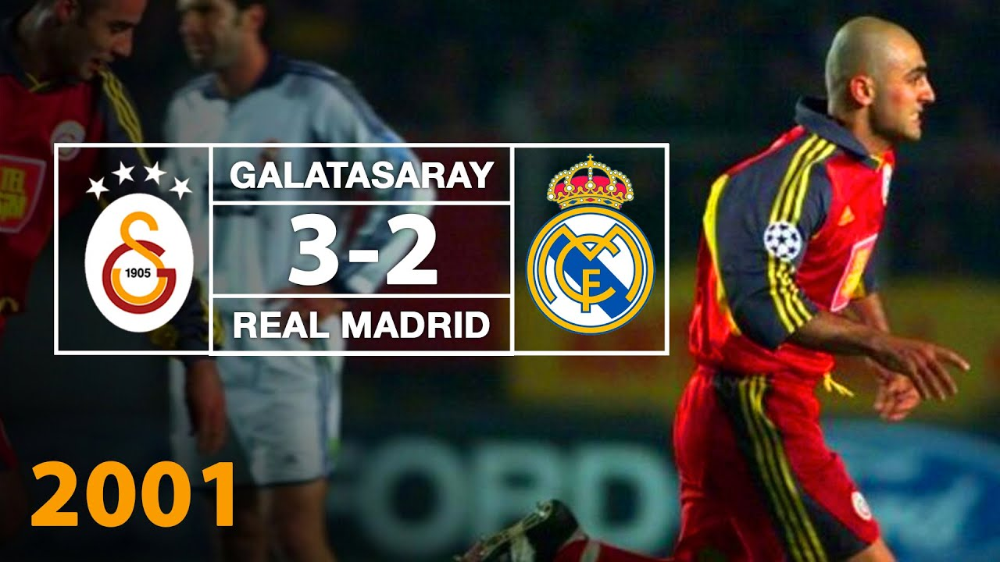
Şampiyonlar Ligi çeyrek finalinde dünya devi Real Madrid'i ağırlayan Galatasaray, 2-0 geriye düştüğü maçı Ümit Karan ve Jardel'in golleriyle 3-2 kazanarak tüm dünyayı şoka uğrattı. Bu geri dönüş, 'Avrupa Fatihi' unvanının ne kadar hak edildiğini bir kez daha perçinledi.
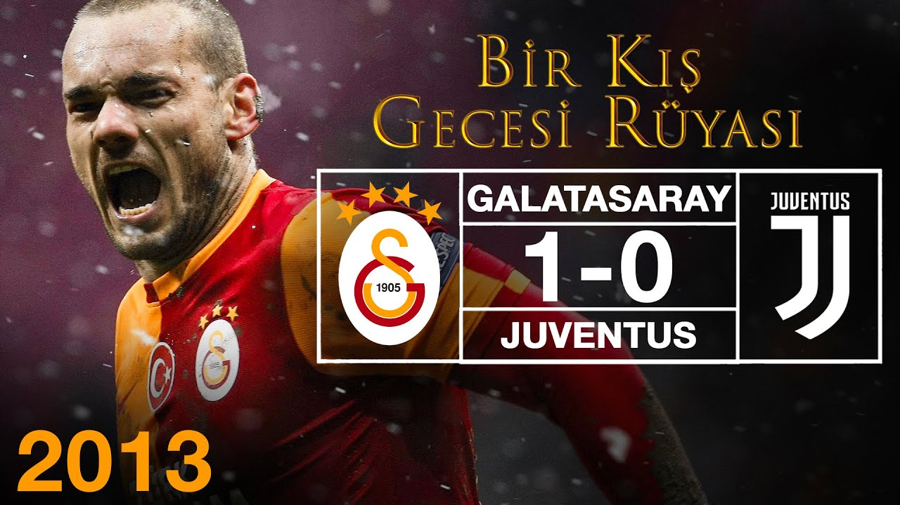
İki güne yayılan ve yoğun kar yağışı altında tam bir irade savaşına dönen Juventus maçında, Wesley Sneijder'in 85. dakikada karların arasından bulduğu gol zaferi getirdi. Bu galibiyet, Galatasaray'ın Juventus gibi bir devi eleyerek Şampiyonlar Ligi'nde son 16'ya kalmasını sağladı.
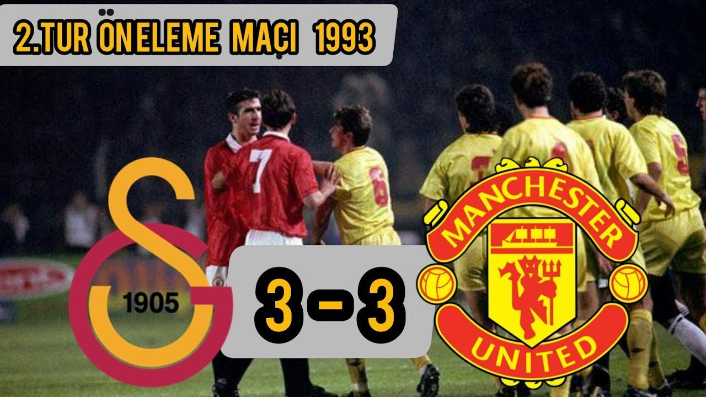
Modern Avrupa başarılarının temelinin atıldığı ve 'Welcome to Hell' sloganının doğduğu bu efsane maçta, Arif Erdem'in Old Trafford'u sessizliğe boğan aşırtma golü unutulmazlar arasına girdi. Bu 3-3'lük beraberlik sayesinde Galatasaray, Şampiyonlar Ligi gruplarına ilk kez katılma başarısı gösterdi.
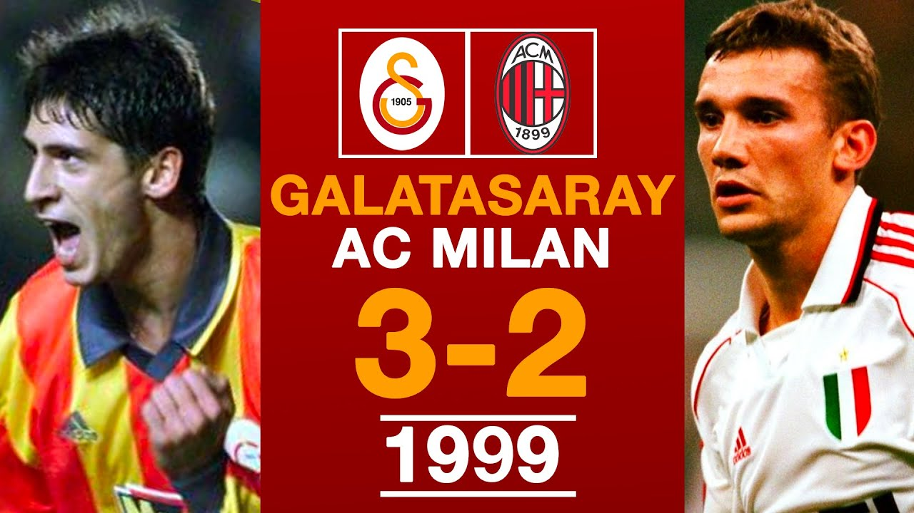
2000 yılındaki tarihi UEFA şampiyonluğuna giden yolun kapıları, Milan karşısında son dakikalarda gelen mucizevi penaltı golüyle aralandı. Bu 3-2'lik galibiyet, Galatasaray'ı grubunda üçüncü yaparak UEFA Kupası'na taşıdı ve büyük serüveni resmen başlattı.
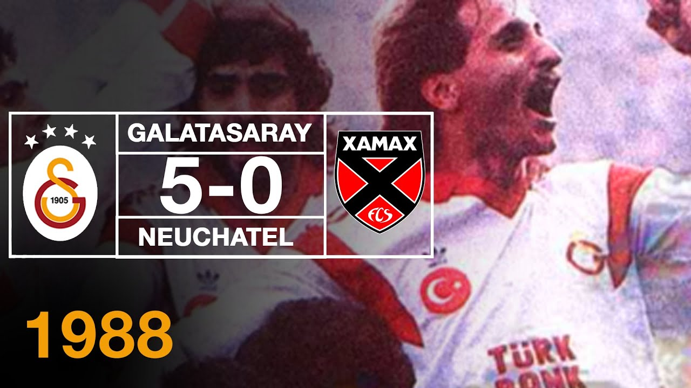
Deplasmandaki 3-0'lık mağlubiyetin ardından İstanbul'da imkansızın peşinden koşulan bu maçta, Tanju Çolak'un hat-trick yaptığı 5-0'lık skor tarihe geçti. Bu sonuç, Türk takımları için Avrupa'da 'asla vazgeçmeme' kültürünün en büyük simgesi oldu.
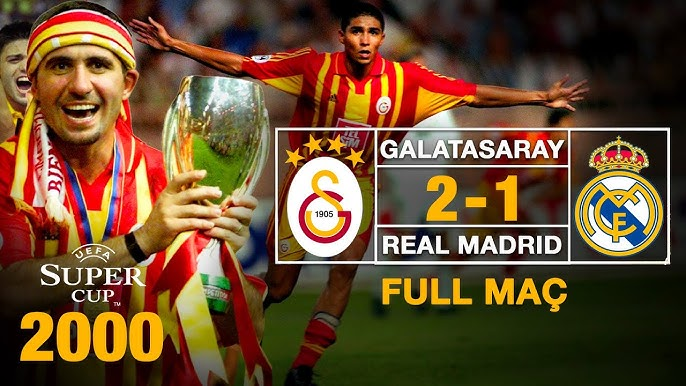
Avrupa'nın en büyüğünün belirlendiği Süper Kupa finalinde, Şampiyonlar Ligi şampiyonu Real Madrid, Jardel'in uzatmalarda attığı 'Altın Gol' ile devrildi. Galatasaray bu zaferle dünya sıralamasında bir numaraya yükselerek gücünü tescilledi.
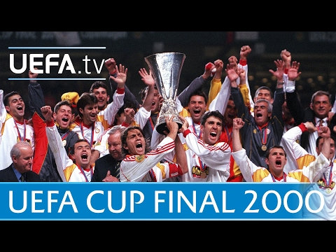
Türk spor tarihinin en büyük başarısı olan Kopenhag Destanı'nda, Arsenal'e karşı 120 dakika boyunca süren büyük direniş penaltılarla taçlandı. Taffarel'in efsane kurtarışı ve Popescu'nun son penaltısı, Türkiye'ye ilk Avrupa kupasını getirerek Galatasaray ismini tarihe altın harflerle kazıdı.
Galatasaray, 2013 yılındaki çeyrek final başarısından sonra Avrupa sahnesindeki gücünü yavaş yavaş yitirmeye başladı. Kulüp içerisinde anlaşmazlıklar; teknik direktör Fatih Terim'in gönderilmesi ve oyuncu grubunun dağılmasına sebep olmuştu. Bu durum, uzun yıllar sürecek Avrupa'daki kötü gidişatın başlangıcı olarak nitelendirilecekti. Her ne kadar Avrupa'da eski etkisini gösteremese de Süper Lig'de iyi performansı sayesinde hemen hemen her sene Avrupa turnuvalarına katılma hakkı elde ettiği için takımda olağandışı bir değişikliğe pek gidilmedi. Ancak Galatasaray, 2021-2022 sezonundaki kabul edilemez bir başarısızlığa da imza atınca işler bir anda tersine döndü. Sezonu 13. bitiren Galatasaray'da bir kaos havası vardı ve yeniden yapılanma çalışmaları başlayacaktı. Yönetim değişti. Yeni başkan Dursun Özbek önderliğinde takımın başına Okan Buruk getirildi. Takımdaki oyuncuların hemen hepsi başka kulüplere gönderildi ve yeni bir takım kuruldu. Bu yeni yönetim ve teknik ekibin kısa sürede aldığı olumlu sonuçlar adeta eski Galatasaray'ı yeniden diriltti. Üst üste gelen lig şampiyonlukları ve Avrupa başarıları değinmeden geçemeyeceğimiz cinsten. Şampiyonlar Ligi'nde dünya devlerine karşı oynanan cesur futbol ve elde edilen epik sonuçlar, kulübün "Avrupa Fatihi" genlerini modern futbolun zirvesine taşıdı.
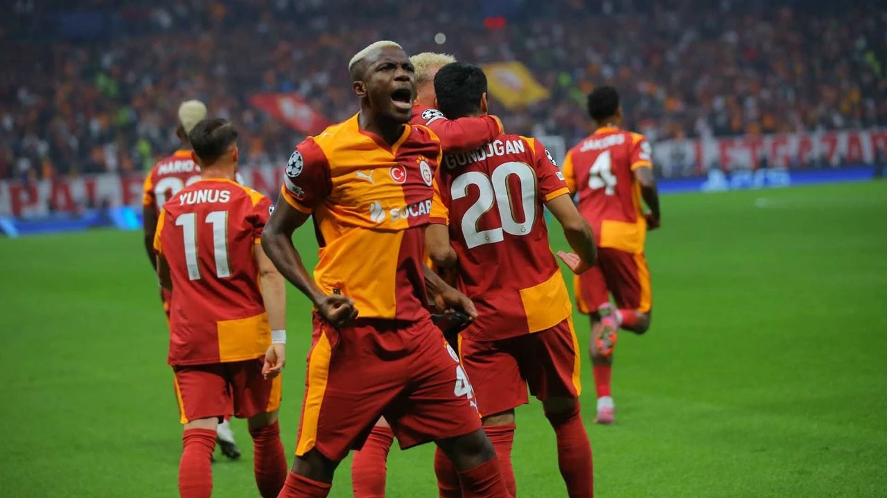
RAMS Park'ta iğne atsan yere düşmeyecek bir atmosferde oynanan bu Şampiyonlar Ligi grup maçı, Galatasaray'ın savunma disiplini ve hücumdaki keskinliğinin bir simgesi oldu. Maçın 16. dakikasında Barış Alper Yılmaz'ın üstün çabasıyla kazanılan penaltıyı Victor Osimhen soğukkanlılıkla gole çevirdi. Liverpool'un yıldızlarına karşı Uğurcan Çakır'ın kalesinde devleştiği ve peş peşe inanılmaz kurtarışlar yaptığı bu gece, İngiliz devinin Ali Sami Yen cehenneminden puansız ayrıldığı bir başka tarihi gün olarak kayıtlara geçti.
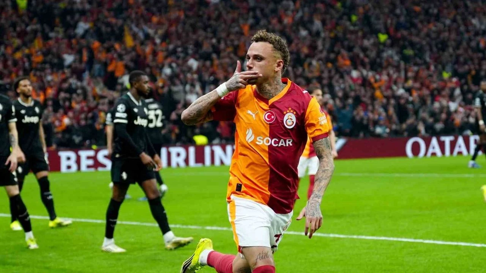
Şampiyonlar Ligi son 16 play-off turunun ilk ayağında Galatasaray, İtalyan devi Juventus'u RAMS Park çimlerine adeta gömdü. Gabriel Sara'nın muazzam uzak mesafe golüyle başlayan şölen, Barış Alper Yılmaz'ın hızı ve Noel Ahang'ın bitiriciliğiyle bir gol yağmuruna dönüştü. Juventus savunmasının çaresiz kaldığı maçta son sözü Saşa Boey'in sağ çaprazdan attığı mermi gibi şut söyledi. 5-2'lik bu ezici galibiyet, sadece bir skor değil, Galatasaray'ın Avrupa'nın elit takımlarına karşı kurduğu taktiksel üstünlüğün bir gövde gösterisiydi.
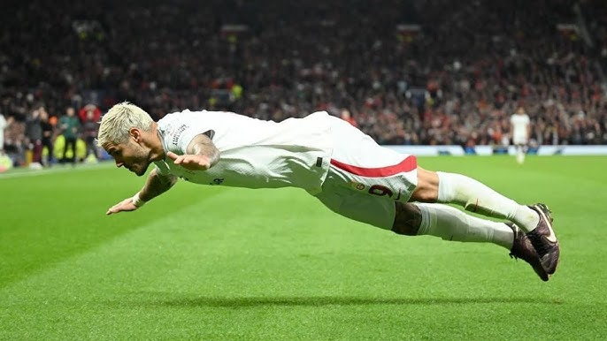
İngiltere'de, "Düşler Tiyatrosu" Old Trafford'da yazılan bu destan, modern dönemin en ikonik zaferlerinden biridir. İki kez geriye düşmesine rağmen oyun planından bir an bile sapmayan Okan Buruk'un öğrencileri; Icardi, Zaha ve Kerem Aktürkoğlu'nun golleriyle Manchester United'ı sahasında şoka uğrattı. Maçın son dakikalarında Icardi'nin kaleciyle karşı karşıya kaldığı pozisyondaki aşırtma vuruşu, binlerce Galatasaray taraftarının İngiltere semalarında yankılanan sevinç çığlıklarıyla birleşerek tarihteki yerini aldı.
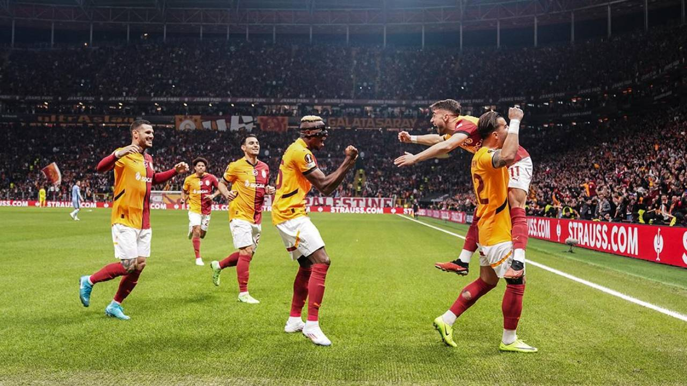
Premier Lig'in en formda ekiplerinden Tottenham'a karşı RAMS Park'ta sergilenen futbol, dünya basınında "taktiksel başyapıt" olarak nitelendirildi. Victor Osimhen'in dünyaca ünlü savunmacıları sahadan sildiği ve peş peşe attığı gollerle tribünleri coşturduğu maçta, Galatasaray oyunun her alanında rakibine ezici bir üstünlük kurdu. Skor 3-2 olsa da, oynanan dominant oyun ve girilen sayısız gol pozisyonu, Galatasaray'ın Avrupa Ligi'ndeki mutlak favori konumunu tüm dünyaya ilan etti.
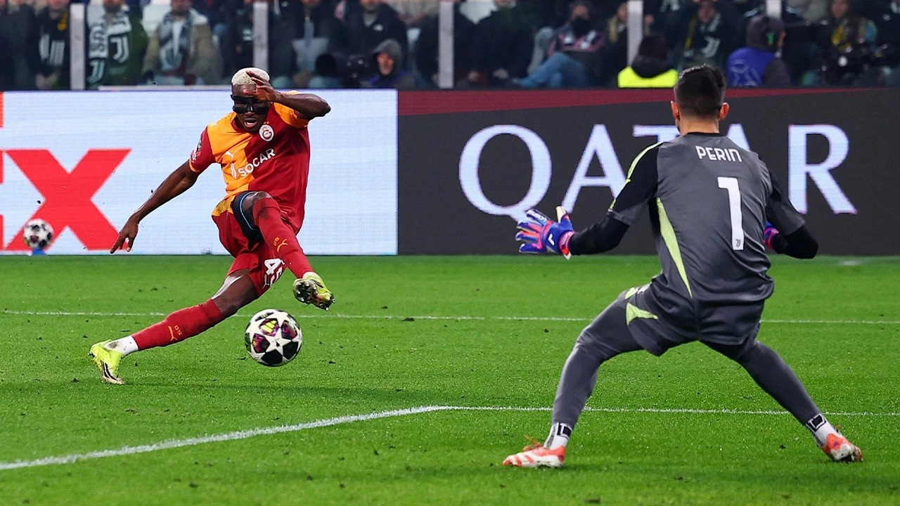
Bu sezonun ve belki de son yılların en unutulmaz, kalplerin durma noktasına geldiği maçı Torino'da yaşandı. İlk maçtaki 5-2'lik avantajla sahaya çıkan Galatasaray, Juventus'un baskısına dirense de ilk 90 dakikayı 3-0 geride kapatarak turun uzatmalara gitmesine engel olamadı. Ancak uzatmalarda "Aslan Ruhu" yeniden sahneye çıktı. 105+1. dakikada Victor Osimhen'in hayat veren golü ve ardından Barış Alper Yılmaz'ın kontrataktan gelen skoru 3-2'ye getiren vuruşuyla Juventus stadı sessizliğe büründü. 3-0'dan dönüp toplam skorda üstünlüğü ele geçirerek İtalyan devini kupanın dışına itmek, Okan Buruk döneminin en büyük Avrupa başarısı olarak tarihe geçti.
Kulüp başarıları hakkında detaylı bilgi için resmi logoya tıklayın: